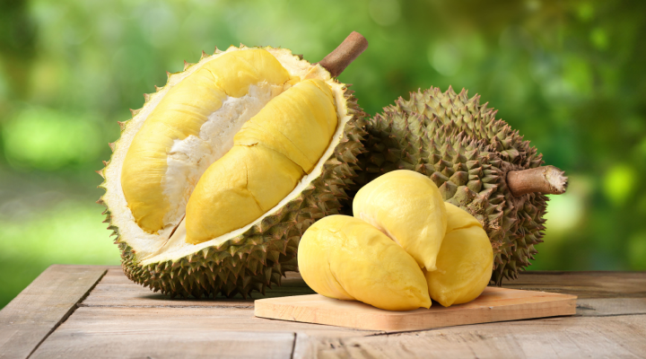

🌿 Tentang Durian
Durian merupakan salah satu buah tropis yang terkenal dengan aroma khas dan kulitnya yang berduri. Buah ini memiliki nama ilmiah Durio zibethinus dan termasuk dalam famili Malvaceae. Durian banyak dibudidayakan di berbagai wilayah Indonesia dan memiliki beberapa varietas dengan bentuk, ukuran, rasa, serta warna daging buah yang berbeda.
🔎 Informasi Umum
🍃 Ciri-Ciri Durian
🌳 Pohon
Pohon durian dapat tumbuh sekitar 20 hingga 40 meter dan memiliki batang yang besar serta kokoh
🟠 Kulit
Kulit buah tebal dan dipenuhi duri yang tajam. Warna kulit umumnya hijau hingga hijau kecokelatan ketika matang.
🌿 Daun
Daunnya berbentuk lonjong, berwarna hijau pada bagian atas dan memiliki warna kecokelatan atau keemasan pada bagian bawah.
🍈 Daging buah
Daging buah memiliki tekstur lembut dan rasa yang manis dengan aroma yang sangat khas.
🌱 Habitat Durian
🌿 Habitat Alami dan Budidaya
Durian tumbuh dengan baik di daerah tropis yang hangat dan lembap. Tanaman ini membutuhkan curah hujan yang cukup, sinar matahari, serta tanah yang subur dan memiliki drainase yang baik.
Durian dapat tumbuh di dataran rendah hingga daerah dengan ketinggian sedang. Tanaman ini banyak ditemukan di kebun dan perkebunan masyarakat.
Penyebaran Durian di Indonesia
Durian tersebar di berbagai wilayah Indonesia, terutama daerah yang memiliki kondisi iklim dan lingkungan yang sesuai untuk pertumbuhan tanaman manggis.
🚜 Sentra Budidaya Durian di Indonesia
Durian dibudidayakan di sejumlah daerah di Indonesia. Beberapa wilayah dikenal sebagai sentra produksi manggis karena memiliki kondisi lingkungan dan kegiatan budidaya yang mendukung.
Beberapa daerah seperti Kabupaten Padang Pariaman, Agam, dan Tanah Datar memiliki budidaya durian
Daerah seperti Bogor dan Kabupaten Subang dikenal memiliki produksi dan budidaya durian.
Durian juga banyak dibudidayakan di beberapa wilayah seperti Jepara, Semarang, dan sekitarnya.
Beberapa wilayah Kalimantan juga menjadi daerah penghasil durian dan dikenal memiliki durian lokal dengan berbagai karakteristik.
💜 Kandungan dan Manfaat
✨ Tahukah Kamu?
Durian sering disebut sebagai “raja buah” karena ukuran, rasa, dan aromanya yang khas. 👑🌳 Selain itu, setiap varietas durian dapat memiliki rasa, aroma, tekstur, dan warna daging buah yang berbeda.